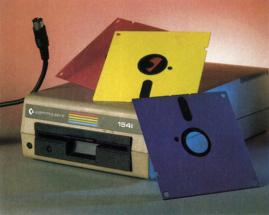

Schneller geht's kaum
Dieses Mal haben wir für Sie ein neues Spitzen-Betriebssystem für den C 64. Ohne zusätzlichen Hardware-Aufwand ist der eingebaute Schnellader für die 1541/70/71 das Schnellste, was wir bisher in den Händen hatten. Aber Exos V3 kann noch viel mehr...

Hypra-Load stellte 1984 einen neuen Geschwindigkeitsrekord in der Arbeit mit dem Diskettenlaufwerk 1541 auf. Hier wurden Ladezeiten erreicht, die bis zum sechsfachen der Originalgeschwindigkeit betrugen.
Unser neues System, Exos V3, leistet noch sehr viel mehr. Es kann Programme bis zu 14mal schneller von einer Diskette laden, enthält eine eingebaute RAM-Floppy, mehrere nützliche Befehle zum bequemen Arbeiten mit dem Bildschirmeditor des Commodore-Basic und einen Zusatzspeicher, der das Umschalten zwischen mehreren Bildschirmseiten ermöglicht.
Die Besonderheiten von Exos V3 sind damit aber noch lange nicht aufgezählt. Interessant an dem Beschleuniger ist nämlich, daß keinerlei Parallelkabel zwischen den Computer und das Diskettenlaufwerk geschaltet werden muß. Das neue System arbeitet, wie Hypra-Load, über den seriellen Bus und erreicht Geschwindigkeiten, die sogar gängige Floppy-Speeder mit Parallelkabel übertreffen. Ihre ganze Arbeit besteht im Einsetzen eines EPROMs im Computer. Sie benötigen keinerlei zusätzliche Hardware und gehen somit auch keinerlei Risiko bei dem sehr empfindlichen Diskettenlaufwerk ein. Ein Aufschrauben der Floppy-Station entfällt.
Haben Sie keine Floppy 1541, so brauchen Sie auf die Arbeit mit Exos V3 nicht zu verzichten. Es funktioniert auch mit der 1570 und der 1571 einwandfrei.
Haben Sie bei bestimmten Programmen Ärger mit dem Laden, so können Sie den Schnellader und auch die Zusatzfunktionen des Systems stufenweise zurück-, beziehungsweise ausschalten. Hiermit wird eine gute Kompatibilität zu käuflicher Software erreicht.
Die Redaktion war überzeugt: Exos V3 hat es verdient, Listing des Monats zu werden.
Eine Bemerkung noch am Schluß: Da die eingebauten RAM-Floppies des Exos V3 denRAM-Bereich unter dem Betriebssystem verwenden, sollten Sie sich das neue System auf jeden Fall in ein EPROM brennen. Für den © 64 benötigen Sie dabei ein EPROM vom Typ 2764 (mit Adaptersockel). Der C 128 benötigt ein EPROM 27128, da hier zusätzlich der Basic-Interpreter im EPROM integriert werden muß. In der Änleitung zum Programm (im Listing-Teil) werden die nötigen Schritte zum Programmieren des EPROMs genau beschrieben.
(J. Schemmel/ks)Schneller geht's kaum
Exos V3 ist der schnellste serielle Floppy-Speeder, der bisher bekannt ist. Ihnen steht aber neben 14mal schneller laden noch ein sehr leistungsfähiges Betriebssystem mit vielen Erweiterungen zur Verfügung.
Nach dem Abtippen des MSE-Listings (Listing 1) haben Sie ein Maschinenprogramm mit einer Basic-Zeile vor sich. Speichern Sie dieses erst einmal sicherheitshalber auf Diskette ab. Als nächstes vergewissern Sie sich, daß Sie das Originalbetriebssystem des C 64 (oder C 128 im C 64-Modus) eingeschaltet haben. Jetzt können Sie das Programm mit RUN starten. Nach kurzer Zeit meldet sich der Computer mit READY zurück. Ab Adresse $2000 (8192) bis $3FFF (16383) liegt nun das neue Betriebssystem im Speicher. Sie können es mit einem Monitor (zum Beispiel SMON: S'"EXOS V3" ,2000,4000) speichern. Die nächsten Schritte hängen von Ihrem EPROM-Brenner ab. Belegt er den Speicherbereich von $2000 bis $4000 nicht, können Sie dasEPROM direkt programmieren. Ansonsten müssen Sie das neue Betriebssystem entweder speichern und mit Hilfe der Software des EPROM-Programmiergeräts wieder laden, oder Sie verschieben es mit einem Monitor in einen, von Ihrem EPROM-Programmiergerät unbenutzten Bereich. Achtung! Ohne Adressenumrechnung verschieben!
Das EPROM (für den C 64 ein 2764, für den C 128 ein 27128) mit Exos V3 kann in jede Betriebssystem-Umschaltplatine oderineinen Adaptersockel gesteckt werden. Der Baueeines Adaptersockels wurde im 64'er schon mehrmals beschrieben (Ausgabe 3/1986, Seite 63).
Jetzt können Sie Ihren Computer einschalten. Hat der Einbau geklappt, meldet sich Ihr C 64 mit einer neuen Einschaltmeldung und hellgrauer Schrift auf schwarzem Grund. Aufgrund der schnellen Reset-Routine muß die Einschaltmeldung sofort nach dem Einschalten erscheinen.
Um Ihr neues Betriebssystem auch voll nutzen zu können, sollten Sie die folgende Anleitung gut durchlesen. Die Kurzanleitung in Tabellenform ist nur zum schnellen Nachschlagen gedacht.
Der Schnellader beschleunigt die LOAD-Routine Ihres Computers um den Faktor 12 bis 14. Dieser variiert mit den Spuren auf der Diskette, auf denen sich das Programm befindet. Programme auf den äußeren Spuren, also den Spuren mit den niedrigen Spurnummern, werden schneller geladen als solche auf den inneren Spuren (höhere Spurnummern). Allerdings handelt es sich hier nur um eine Differenz von etwa 20 Prozent. Ein 200' Blöcke langes Programm wird in knapp zwölf Sekunden geladen, wenn es auf den äußeren Spuren liegt. Befindet es sich dagegen ganz innen auf der Diskette, dauert der Ladevorgang etwa 14,5 Sekunden. Um diese Ladegeschwindigkeit zu erreichen, ist keinerlei Umkopieren oder Umformatieren der Diskette notwendig.
Während des Ladevorgangs ist der Bildschirm abgeschaltet. Der Ladevorgang kann trotzdem jederzeit durch Drücken der <RUN/STOP>-Taste unterbrochen werden. Während des Ladens ist die Tastaturabfrage noch aktiv. Alle gedrückten Tasten werden in den Tastaturpuffer übernommen. Sie können also während des Ladevorgangs RUN oder LIST eingeben. Der Befehl wird dann nach Beendigung des Ladens ausgeführt.
Da der Schnellader auf größtmögliche Kompatibilität ausgelegt wurde, kann er die meisten Programme, auch mehrteilige, einwandfreiladen. Kein Schnellader kann aber hundertprozentig kompatibel sein. Sollte es also Probleme geben, so kann man Exos V3 auch abschalten. Doch dazu später mehr.
Das Directory wird ohne Programmverlust, dasheißt direkt in den Bildschirmspeicher, geladen. Der Befehl dafür lautet LOAD"$" 8. Im Programmodus wird das Directory automatisch wieder normal geladen, um die Kompatibilität zum Original-Betriebssystem zu gewährleisten.
Die Funktionstasten wurden mit häufig gebrauchten Befehlen belegt. Die genaue Belegung finden Sie in der Kurzanleitung (Tabelle ]).
| Befehl | Funktion |
|---|---|
| <CTRL+K> | Fehlerkanal des Diskettenlaufwerks anzeigen |
| <CTRL+O> | OLD-Funktion |
| <CTRL+U> | RAM unter dem Basic-ROM SAVEn |
| <CTRL+S> | Basic-Programm in die RAM-Floppy übertragen |
| <CTRL+L> | Basic-Programm aus der RAM-Floppy zurückholen |
| <CTRL+V> | Basic-Programm und Inhalt der RAM-Floppy vertauschen |
| <CTRL+F> | IRQ-Frequenz der Floppy-Station erhöhen |
| <CTRL+X> | Basic-Programm ab aktueller Stelle LISTen |
| <CTRL+Z> | Basic-Programm 50 Zeilen vor der aktuellen Stelle LISTen |
| <CBM+F1> und <CBM+F3> |
Zwischenspeichern von Bildschirminhalten in die Zusatzspeicher |
| <CBM+F5> und <CBM+F7> |
Zurückholen von Bildschirminhalten aus den Zusatzspeichern |
| <CTRL+A> | Schnellader abschalten |
<CTRL+K> zeigt den Floppy-Fehlerkanal auf dem Bildschirm an. <CTRL+O> holt ein versehentlich durch NEW oder RESET gelöschtes Basic-Programm zurück (OLD). Es ist danach wieder vollkommen LIST- und editierfähig. Die OLD-Routine richtet sich beim Zurückholen nach der aktuellen Startadresse des Basic-Speichers. Somit können auch Programme, die mit verschobenem Basic-Anfang arbeiten, zurückgeholt werden.
<CTRL+U> erlaubt dasSAVEn desRAMs unter dem Basic-ROM. Das hört sich etwas unverständlich an, hat aber folgenden Grund: Hat man ein Programm im Speicher, das länger als 151 Blöcke auf der Diskette ist, liegtseinEndeindemRAM unter dem Basic-ROM. Man erkennt dies daran, daß der Computer einen »OUT OF MEMORY ERROR« ausgibt, falls man versucht, ein weiteres Programm zuladen. Diese Fehlermeldung trifft auch zu, denn die Endadresse des geladenen Programms ist größer als die Endadresse des Basic-Speichers. Will man dieses Programm nun mit dem SAVE-Befehl abspeichern, entsteht folgendes Problem: Hinter dem Basic-Speicher folgt das Basic-ROM. Unter dem Basic-ROM liegt allerdings auch ein RAM-Bereich. Dieses RAM kann allerdings von Basic aus nur beschrieben werden. Beim Lesen erhält man immer Werte aus dem Basic-ROM. Dies kann man sehr leicht nachprüfen. Gibt man POKE 45000,2 ein und danach PRINT PEEK(45000), so erhältman eine Zahl ungleich 2 zurück. Doch jetzt wieder zurück zu unserem Programm. Sein Ende liegt also im RAM unter dem Basic-ROM. Speichert man es nun mit der SAVE-Routine ab, liest diese die Programm-Bytes genauso wie der PEEK-Befehl aus dem Speicher des Computers. Es werden also die Werte aus dem Basic-ROM gelesen und auf die Diskette gespeichert. Das Ende des Programmes unter dem Basic-ROM fehlt nun auf der Diskette.
Durch Druck auf <CTRL+U> kanndie Save-Routine unter Exos V3 so umgeschaltet werden, daß sie auch das RAM unter dem Basic-ROM richtig abspeichert. Nach Druck auf <CTRL+U> können jetzt auch Programme, die länger als 151 Blöcke sind, mit SAVE abgespeichert werden. Durch <RUN/STOP> und <RESTORE> wird diese Funktion wieder abgeschaltet.
Die RAM-Floppy des Exos V3 ist zwar keine vollwertige RAM-Floppy, wie man sie üblicherweise auf größeren Computer-Systemen findet, sie erlaubt aber eine sinnvolle Nutzung der 24 KByte Speicher, die in einem © 64 unter Basic normalerweise keinerlei Funktion haben.
Mit der RAM-Floppy können Basic-Programme in vier verschiedene RAM-Bereiche gespeichert und daraus wieder geladen werden. Die Bereiche eins bis drei können gleichzeitig verwendet werden, während bei einer Benutzung des vierten Bereichs die ersten drei Bereiche nicht mehr verwendet werden dürfen.
Es können sich also maximal vier Basic-Programme gleichzeitig im Speicher befinden.
Die Bedienung der RAM-Floppy geschieht wieder über <CTRL>-Tastenkombinationen. Mit <CTRL+S> wird ein Basic-Programm in die RAM-Floppy übertragen. Mit <CTRL+L> wird ein Programm ausderRAM-Floppyinden Basic-Speicher geladen, und mit <CTRL+V> wird das aktuelle Basic-Programm mit dem aus der RAM-Floppy vertauscht. Die beiden letzten Befehle führen automatisch ein OLD aus, um alle Adressen des Interpreters an das geladene Basic-Programm anzupassen.
Die Auswahl des gewünschten RAM-Floppy-Bereichs geschieht über ein kleines Menü, das bei den obigen <CTRL>-Kombinationen erscheint:
(0) 20K B0-FF
(1) 4K B0-BF
(2) 4K C0-CF
(3) 12K D0-FF
Einfach die entsprechende Zifferntaste drücken, und die Funktion wird mit dem gewählten Bereich ausgeführt. Drückt maneine andere Taste, so wird die RAM-Floppy-Funktion abgebrochen. <CTRL+F> erhöht die IRQ-Frequenz der Floppy-Station. Das bewirkt, daß der Schreib-Lese-Kopf des Laufwerks schneller bewegt wird. In der Praxis bedeutet dies, daß alle Disketten-Befehle, die viele Kopfbewegungen ausführen, schneller werden, zum Beispiel: S(cratch), V(alidate) und so weiter.
<CTRL+X> LISTet ein Basic-Programm ab der zuletzt bearbeiteten Zeile auf. Wenn Sie zum Beispiel beim AufLISTen eines Basic-Programms einen Fehler entdecken, mit <RUN/STOP> anhaltenund den Fehler verbessern, können Sie das Programm mit <CTRL+X> ab derkorrigierten Zeile weiter aufLISTen, ohne einen Befehl eingeben zu müssen. Nicht immer läßt sich jedoch die Adresse der zuletzt bearbeiteten Zeile rekonstruieren. In diesem Fall LiISTet <CTRL+X> das Programm von Anfang an. In sehr seltenen Fällen kann es auch vorkommen, daß das Betriebssystem die falsche Adresse nicht erkennt und Unsinn geLISTet wird. <CTRL+Z> arbeitet genauso wie <CTRL+X>, lediglich wird hier 50 Zeilen vor der zuletzt bearbeiteten Zeile mitdem LISTen angefangen.
Das Betriebssystem Exos V3 verwaltet insgesamt vier verschiedene Bildschirmspeicher. Sie liegen von $A000 bis $AFFF (40960 bis 45055) unter dem Basic-ROM. Mit <CTRL> und einer der vier Funktionstasten (<Fl>, <F3>, <F5> und <F7>) kann man den Bildschirminhalt mit einem der vier Zusatzspeicher vertauschen und so wichtige Ergebnisse oder Programmteile immer schnell griffbereit haben.
Mit <CBM+Fl> oder <CBM+F3> kann der Bildschirminhalt in den dritten oder vierten Zusatzspeicher gespeichert werden, ohne daß dabei. sein Inhalt verändert wird. <CBM+F5> oder <CBM+F7> sind jeweils die Umkehrfunktionen dazu. Mit ihnen wird der Inhalt des entsprechenden Zwischenspeichers in den normalen Bildschirmspeicher kopiert, ohne daß der Inhalt des Zwischenspeichers verändert wird.
<CTRL+A> schaltet den Schnellader ab. Es wird danach wieder mit der Original LOAD-Routine geladen.
Mit <RUN/STOP +RESTORE> wird er wieder eingeschaltet. Diese Funktion gestattet es auch, Programme zu laden, die mit dem Schnellader nicht laufen würden.
Der Reset wurde durch Weglassen des meistens überflüssigen RAM-Tests stark beschleunigt. Er dauert jetztnur noch Bruchteile von Sekunden.
Trotzdem wird auch weiterhin geprüft, ob ein EPROM im Modulbereich (ab $8000) eingeschaltet ist, und danach das Basic-Speicherende entsprechend herabgesetzt. Ohne Modulsind also, wie immer, 38911 Basic-Bytes frei, mit Modulnur noch 30719.
Statt der normalen »LOADING« Meldung der Laderoutine wird jetzt»LOADING TO ADR« ausgegeben, wobeimit»ADR« die Adresse gemeint ist, an die das Programm geladen wird. Bei Basic-Programmen ist das normalerweise 2049.
Das Bildschirmscrollen kann jetzt nicht nur mit <CTRL> verlangsamt sondern mit <CBM> auch ganz gestoppt werden.
Mit <SHIFT+RUN/STOP> wird das erste Programm von Diskette geladen und gestartet.
Ein eventueller Reset-Schutz wird durch gleichzeitiges Drücken von <CTRL> und eines Reset-Tasters ignoriert
Bei der Eingabe von LOAD oder SAVE muß man keine Geräteadresse angeben. Es wird dann automatisch mit der Geräteadresse 8 und der Sekundäradtesse | (,8,1) geladen. So, jetzt fehlt nur noch eine Abschaltmöglichkeit für all die neuen Funktionen, damit das gesamte System möglichst kompatibel bleibt.
Zum Abschalten benötigt das Betriebssystem eine Speicherstelle, inderesnachschauen kann, ob eine Funktion ein- oder ausgeschaltet ist. Dazu wurde die Speicherstelle Null gewählt.
Da zwei Bit dieser Speicherstelle unbenutzt sind, wurden sie für unsere Funktion eingesetzt. Bit 6 ist für den Schnellader zuständig, während Bit 7 die Funktionstasten, die <CTRL>-Kombinationen und das Directory-Laden übernimmt.
Ist das entsprechende Bit gelöscht, ist die zugehörige Funktion eingeschaltet, hat das Bit den Wert ], ist sie folgerichtig aus.
Um Bit 6 (Schnellader) brauchen Sie sich nichtzukümmern, <CTRL+A> erledigt dies für sie.
Für Bit 7 reicht ein
POKE 0, PEEK(0) OR 128
Wenn Sie alles auch wieder einschalten wollen, genügt ein Druck auf <RUN/STOP+RESTORE>.
(J. Schemmel/ks)